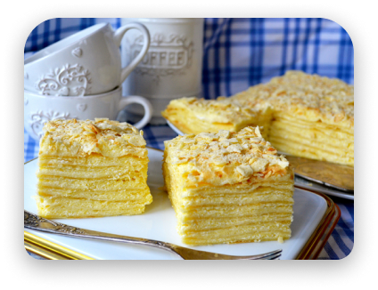
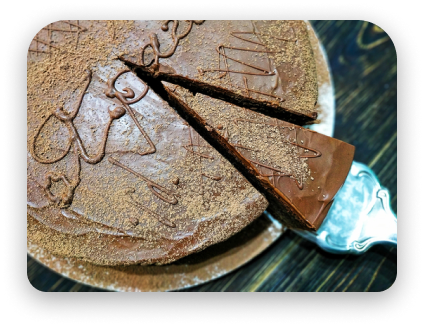
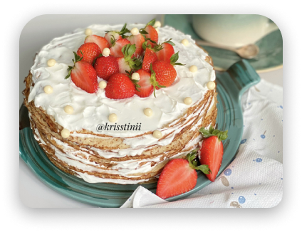
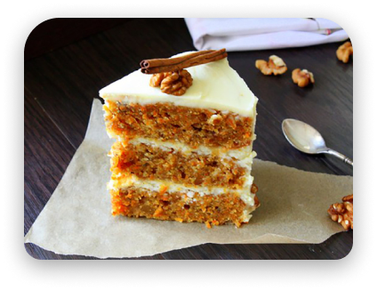
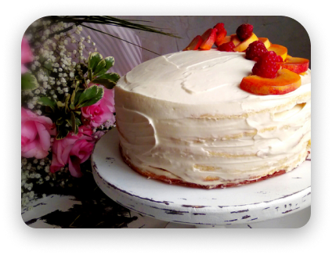
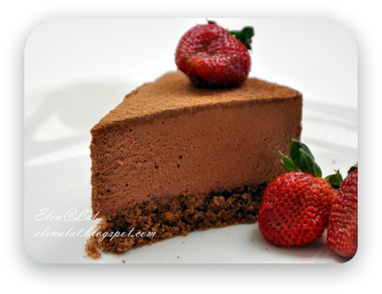

Наполеон
Многие, отдавая предпочтение классике, сделают выбор в пользу «Наполеона».
Испечь его может каждый, так как состав предельно простой...

Прага
Классическая «Прага» с
глубоким вкусом поразит в самое сердце любителей шоколада!

Блинный торт
Простой блинный торт можно спокойно подать без повода.
Изделие очень просто готовится, если уже отработан навык приготовления тонких блинчиков.

Морковный торт
Морковь, орехи и нежный сыр — главные составляющие этого торта. Обычно на него
обращают внимание истинные гурманы, способные разглядеть в простом овоще огромный потенциал!

“Молочная девочка”
Если на приготовление торта у вас есть всего 1 час, выбирайте «Молочную девочку»! Доступные продукты, простой рецепт, а результат
превосходит все ожидания. Украшайте десерт по вкусу: фрукты, ягоды, мастика — подойдет все.

Трюфельный торт
Вот еще один вариант мегашоколадного лакомства. Терпкий трюфельный вкус начинки и нежный бисквит —
так в двух словах можно описать торт.